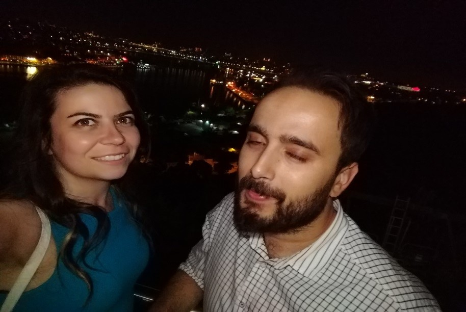

Bu sefer yeniden farklı bir konseptle karşındayım. Aslında, şu anda okuyor olduğun bu galerimsi şey temel olarak sana doğum gününe özel hazırladığım hediyeye benzer tarzda olacak. Ancak gördüğün üzere bu sefer biraz daha farklı. Ben de günümüzde dünyanın geçiriyor olduğu bu dijital dönüşüme ayak uydurarak bizim için bu web sitesini hazırladım. Sevgili A, antropolojik bir bakış açısıyla, insanoğlunun evlilik ritüelleri asırlar boyu sürekli evrilmiş diyebiliriz. Mesela Antik Yunanda bir kadına elma fırlatmak bir evlilik teklifi olarak kabul edilirmiş. Eğer kadın elmayı yakalarsa bu kadının evlilik teklifini kabul ettiği anlamına gelirmiş. Aslında fena fikir değil, ne dersin? Kırmızı, bol sulu, kütür kütür bir elma. Canın çekti değil mi? Neyse konumuz bu değil şu anda. Bu arada yasak meyvenin de elma olarak tasvir edilmesi ise bir diğer ilginç durum. Belki de birine elma fırlatmak, seninle “elma” mı kutsamak istiyorum demek. Evlilik aslında bizim ortak elmamızın ailelerimiz tarafından onanması demek. Evet, bir kez daha konudan saptım. En iyisi bir görselle bu konuyu kapatayım.
Neyse sevgili A. Şu ana dek dünya üzerinde milyonlarca evlenme teklifi yapıldı. Bunların kimisi çok çılgın, kimisi titizlikle organize edilmiş, kimisi dümdüz sorulmuş “Benimle evlenir misin?” , kimisi ise daha ağdalı bir Osmanlı Türkçesi ile:
“Ey dilberi rana! Ey tesadüf-ü müstesna!
O mahrem suratınızı görünce size lahza-i kalpten sarsıldım.
Niyetim acizane-i taciz etmek değildir.
Bilakis efkar-i umumiyede ufak bir aile bacası tüttürmektir.
Sözlerim sizi temin ve tatmin edecekse şayet,
zevc-i izdivacınıza talibim!”
diye yapmış teklifini. Nasıl kafan karıştı değil mi? Bir de bana kalırsa en onursuz evlenme teklifi çeşidi var: Bir organizasyon şirketiyle anlaşarak bu konuda profesyonel yardım almak. Yani; parası olan adamın evlenme teklifi için müstakbel eşinin kapısına damperli kamyonla gül döktüğü organizasyonlar, bundan mutlu olan kadınlar. Sonrasında aynılaşan bireyler. Mutsuz evlilik ve sorunlu çocuklar ve maddi değerler üzerine inşa edilen, içi boş bir evlilik için kaçınılmaz son. Sen ile ben ise farklıyız sevgili A. Bizi birleştiren şeyler çok daha derin. Bakışlarımız, kalp atışlarımız ve frekanslarımız. Adeta aynı radyo frekansının farklı şehirlerdeki (İstanbul-Sakarya) sahipleri gibiyiz. Şu anda herhangi bir dinleyici kitlemiz yok, ancak ileride neden olmasın? Belki kendi radyomuzu kurarız. Playlist’imiz var (Yol Şarkıları). E program yapma konusunda da çalışmalarımız devam ediyor. Bkz. Indigo Nights Vol.1. İşte bu ve buna benzer milyonlarca farklı şey var kafamda. Hepsinde de yanımda sen varsın. Çünkü biliyorum ki, ben ne yaparsam yapayım sen hep benimle olacaksın. Yargılamadan ve yadırgamadan. Tıpkı bu resimdeki gibi daima sırtımı sana yaslayabileceğimi biliyorum.
Ya da sana burada olduğu gibi gözüm kapalı güvenebileceğimi:
Tamam, bu baya kötü çıkmış. Moralini bozma hemen. İlerleyen bölümlerde daha güzel fotoğraflarımız var.
Güzel bir girizgah yapabilmişimdir umarım. Bu noktadan sonra aslında biraz da kaderin nasıl ağlarını ördüğü üzerinde kendimce bir analiz yapmak niyetindeyim. Yani “Birleştiren neydi ellerimizi?”. sorusuna cevap arayacağız.
“A.” adlı çalışmamda daha önce 16 Şubat 2016’ya kadar olan bir zaman zarfını senin açından ele almıştım. Sonrasını yazmak ise bugüne kısmetmiş demek. Evet sevgili A., BOUN’a gelmek aslında o zamanlar benim için bir “hicret” ti adeta. 10 yıldır -Aslı hoca’nın tabiriyle- “Taşra” da yer alan bir şehirde yaşıyordum. Hayat çıkmaza girmişti. Zira insan devinim halinde olmalı ve 10 yıl Sakarya gibi hayatın daha basit ancak daha durağan olduğu bir yere göre çok fazla. Gerçekten çok fazla. İtiraf etmeliyim ki, İstanbul’a 2016 yılında tekrar döndüğümde biraz afalladım. Sanki hayatımın ilk 18 yılını burada yaşamamış gibiydim. Trafik, hayat pahalılığı, bir ergen olarak gittiğim Sakarya’dan tekrar ailemin yanına yetişkin bir birey olarak geri dönmek gibi pek çok faktör işimi zorlaştırıyordu. Ama bunun “yeni bir başlangıç” olduğunun ve hayatın bu fırsatı her insana her zaman sunmadığının gayet farkındaydım. İşte bu afallama sürecini kolay atlatmamı sağlayan, beni tekrar “taşı toprağı altın şehir”e adapte eden kişilerin başında sen geliyordun sevgili A. En baştan itibaren içtenlikle hep yardımcı oldun. Hiçbir zaman bana kendimi farklı hissettirmedin. Sayende 1 ay dolduğunda sanki çok uzun yıllardır İstanbul’daymışım ve seni asırlardır tanıyormuşum gibi hissetmeye başlamıştım bile. Bunda tabi en başta birlikte sık sık yaptığımız ortak aktivitelerin de büyük payı var. Birkaç örnek verecek olursak:
Mesela bu; gelenekselleşmesini öngördüğümüz ancak 3. Seferden sonra tarihin tozlu sayfalarına karışan “Cuma öğlen kahvaltısı” organizasyonlarımızdan bir tanesi. Benim tipe bak Ya da bakma vazgeçtim.
Bir diğeri uğruna büyük emekler sarf ettiğin kimi zaman çıldırma noktasına geldiğin ve organizasyon esnasında bizim de payımıza düşen çileyi çektiğimiz ECIS2016’dan.
Kahküllü zamanların sevgili A. Güzeldi aslında boynuna dolanan kahküllerin Bu iki resimde dikkatini ne çekti? Hep yan yanayız. Aslında ileriye yönelik çeşitli mesajlar içeren bir durum değil mi bu? (Bu arada Çılgın İrfan nasıldı ama? Söylemeden geçemeyeceğim)
Peki bu?
Ah siyah zippom ah Neyse ki ileride daha güzelini aldın bana. Bir de benim mağrur tavrım yok mu burada. Hallere bak. Özetle bu başlangıç aşamasında aslında aramızda bir çekim olduğu, birbirimize hep yakın durmamızdan belliymiş. Yine önceki çalışmamda bahsettiğim “atomlar arası etkileşim” teorisinin iddia ettiği gibi.
Hikayemizin en güzel kısmı burası. Aslında yazabileceğim o kadar çok şey var ki burada. Gerçi çoğu şeyi elimizden geldiğince “hafıza defteri” mize yazıyoruz. Şu anda yazdıklarım ise bu olağanüstü zamanların silik birer kopyası gibi. Silik derken, her şey aklımda ve kalbimde ilk günkü tazeliğini koruyor. Öyle olmasa zaten bu satırları yazamazdım sana şu anda.
Evet sevgili A., önceki bölümde bahsettiğim üzere muazzam bir uyum yakalamıştık seninle. Seninle her şeyi konuşabiliyor, her sıkıntımı seninle paylaşabiliyordum. Haliyle, heteroseksüel bir erkek olarak, aklımda bazı düşünceler zaten oluşmaya başlamıştı. Ancak korkuyordum. Bu dostluğu kaybetmekten korkuyordum. Çünkü bir kadın ve erkeğin arkadaşlığın ötesinde duygusal bir bağ ile birbirine bağlı olması ilişkinin dinamiklerine yeni boyutlar katıyordu. “İyi bir arkadaş, iyi bir sevgili” kaidesinin geçersiz olması şeklinde izah edilebilir bu durum bana kalırsa. Öte yandan aynı yerde çalışıyor olmamız ve dahası aynı ofisi paylaşıyor olmamız da büyük bir risk teşkil ediyordu. Olası kötü bir senaryo her şeyi mahvedebilirdi. Bu yüzden dikkatli olmalıydım. Gerçi kimi zaman kontrolü kaybettiğim, duyguların mantığa baskın geldiği zamanlar oldu. Olmadı değil. (232, “Ya sen salak mısın?” gibi) Ancak duygularımın mantığımı tamamen alt etmesini beklemeliydim. Çünkü ancak o zaman gerçek “aşk” olabilirdi. Benim hep beklediğim ve istediğim gibi. Çünkü her ne kadar öküz olsam da, benim ilişkiye başlayabilmek için ön şartım “aşk” idi o zamanlar. Derken birden sevgili oluverdik. Buna adapte olmam da kolay olmadı. Kabul ediyorum. Çünkü hala mantığım beni sağduyulu olmaya davet ediyordu. Halt yemişim. Keşke daha önce başlamış olsa idik. Geri dönüp bakınca ne kadar da doğru bir karar almış olduğumuzu görüyorum.
Evet hayatım, şu an itibariyle yaklaşık 13 ay 26 gündür birlikteyiz. Bu süre zarfında çoğu karı kocaya bir ömür nasip olmayacak kadar fazla güzel anı biriktirdik. Bu durum senin ve benim “yaşam arsızı” olmamıza bağlanabilir. Gerçek anlamda “yaşamayı” seviyoruz. Daha da önemlisi bunu birlikte yapmayı çok seviyoruz. Ayrı iki birey olarak başladığımız bu ilişkide bizi “bir” yapan en önemli unsur bu olabilir. Bu söylediklerimi de resimler ile desteklemek gayesindeyim şu anda. Sadece bak. Yüzümüzdeki mutluluğa bak. Zamanında sana söylemiş olduğum gibi “bir insanın bir fotoğrafta gerçekten gülüp gülmediğini anlamak için ağzını parmağınla kapatıp gözlerine bakmalısın” Ben kapadım ve hepsinde gülen gözler gördüm. “Mutluluğun resmini” çizmişiz seninle. Hatta fotoğrafın sonsuz anlardan sadece birini ölümsüzleştirdiğini varsayarsak, biz bunu zamana yayıp filmini çekiyoruz. Zaten çoğu zaman seninle konuşurken arkada gülme efektleri yankılanıyor kafamda nedense
Az önce bahsettiğim gibi bu fotoğraflar gerçekten yaşadıklarımızın, hissettiklerimizin sadece göstergesi olabilir. Ruh halimizdeki varyansın ise yalnızca ve yalnızca çok az bir kısmını açıklayabilir. Mesela bak şu ana kadarki en güzel anımız olmaya aday olabilecek, Kartepe’deki o geceden kalanlardan bir tanesi:
Ki bu da o geceden kalanlar arasında en net çıkan fotoğraf belki de. Böyle bir şey olabilir mi? Hatırlar mısın? Sana bir keresinde şuna benzer bir şey söylemiş idim.
“ Sevgili A. Normalde yaşadığımız anlar ancak üstünden biraz zaman geçip “anı” klasöründe yerlerini alınca güzelleşebiliyorlar. Bir nevi sonrasında zihnimizde canlanan şey bize güzel geliyor. Gerçekleştiği anda güzel olan anlar o kadar az ki. Ama seninle her anım gerçekleştiği anda güzel diyebilirim” Ne güzel demişim değil mi? Çünkü ben mükemmelim. Ahahahahha. Şaka bir yana sevgili A., ben hiç seninle yaşadığım gibi yaşamadım. Daha doğrusu senden önce doğru düzgün yaşamamışım. “Hayat” ve “mutluluk” kavramları yeniden tanımlandı seninle. Yerine oturdu yani taşlar. Olgunlaştım. Sakinleştim. Duruldum. Güzel olan çok şey kazandım. Çirkin olan şeyleri ise çıkardım hayatımdan. Dolayısıyla sevgili A., küllerimden doğarak yeni bir ben çıkardım, çıkardık birlikte. Teşekkür ederim bunun için gerçekten. Eksik olma, fazla ol. Benim ol, ilelebet.
Şimdi ise bu çalışmamın son kısmında kaderin yollarımızı nasıl kesiştirdiğini fotoğraflar vasıtasıyla bir zaman çizelgesine dökeceğim. Heyecanlı
Evet sevgilim, gördüğün üzere 1993 ile 2007 yılları arasında dev bir boşluk var. Bu muhtemelen dolu dolu bir çocukluk yaşamamızdan kaynaklanıyor. Dünyayı keşfetmekle o kadar meşguldük ki fotoğraf çekilmeye pek fırsat bulamadık. Bu metin boyunca bahsetmediğim ve bizi birbirimize kenetleyen bir diğer ortak nokta ise bu bahsettiğim içimizde doğduğumuzdan beri yanan bu merak duygusu. Zaten ikimizin de araştırma görevlisi olması bunun en büyük göstergesi değil midir? Mesela, “Pavurya” nın iri yengeç olduğunu kendimizi keşfettiğimiz o muhteşem tatil sırasında öğrendik. Ya da işaret kürelerinin ne işe yaradığını. Bu şekilde merakımızı bir ömür diri tutabileceğimize inancım tam. Zaten bu “merakımızı” kaybetmemiz sonumuz olacaktır. Dolayısıyla bana bir söz vermeni istiyorum burada: Merakını kaybetme ve kaybetmeme müsaade etme. Seninle bu dünyadan göçüp giderken pek çok soruya henüz cevap bulamamış olacağız. Ancak bulduğumuz cevaplar yeterli olmak zorunda diye düşünüyorum. En temel soruya cevap buldum ben mesela: Sen. Evet sen sevgili A. Ve sen öyle bir cevapsın ki, diğer cevapları bulmamda da bana yardım edeceksin. Buna eminim, kutup yıldızım.
Yazıma burada son verirken, son sözü kendime bırakıyorum. Aşağıdaki videoda sana aşık bir adam bulacaksın sevgili A.
Hasretle senin;
T.